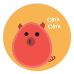

Factory Farming in Canada

Our sentimental image of chickens, cows, & pigs being raised on an perfect family farm is outdated. Over 95% of the 665 MILLION animals raised and used for food in Canada today are mass-produced on factory farms. Here, they live their short lives indoors in intensive confinement systems, deprived of everything that is natural to them including sunlight, family, and even the ability to turn around.
The horrific conditions that exist on Canada’s modern farms include animals being crammed by the thousands into filthy windowless sheds, wire cages, and other cruel confinement systems. These animals suffer staggering neglect, mutilation, genetic manipulation, and drug regiments that cause chronic pain. During transport, many animals are hurt, and thousands die from overcrowding and extreme hot or cold temperatures. Their tortured lives end in terror and sadness with violent deaths in slaughterhouses across the country.
Chickens

Over 600 million broiler chickens live and die in scary conditions to supply Canadians with their meat and eggs. Thousands of chickens are crowded into dark and dirty warehouses where they have their beak tips removed without anaesthetic and suffer chemical burns and respiratory diseases from the dirty conditions. The biggest chickens are bred to make more large chickens which then grow so large their bones can't hold them up. This can lead to suffocation from too many chickens in a small space. In the factory farming environment, sick chickens are not helped and are trampled to death or die of dehydration.
Egg-laying chickens are hurt animals in the world. Four to six hens are placed together in wire battery cages that have a floor the size of a folded newspaper. They never spread their wings and can never move, standing on sloping wire floors and suffering feather loss and skin damage due to constant rubbing against the cage and cage-mates. Up to 20% of the hens raised under these conditions die of stress and disease. Male chicks don't help the egg industry, so every year in Canada, tens of millions of chicks are killed.
The natural life span of a chicken is 15-20 years, but in factory farm production, egg-laying hens are killed at just 1½ years of age and broiler chickens at 42 days of age or less.
Cows

Most of Canada’s 14 million beef and dairy cows are treated like parts of a food assembly line. Cows raised to become beef live their short lives on unclean lots with 40,000 other cows. They are often branded, castrated, and dehorned without anaesthetic to numb them. Man cows suffer from chronic respiratory problems because of the cramped space they live in. To keep them alive in these unhealthy conditions and to make them grow faster, the cows are given chemicals.
Cows are abused in the agribusiness system. They are often chained in stalls for their entire lives where they are fed and milked by machines. Even lying down can be hard. The dairy cow is forced to have babies so humans can drink her milk. The sad part is that the babies are taken away from their mothers right away, leaving the mothers confused and depressed. This separation causes terrible stress and anxiety for both mother and calf: both will often cry for days or even weeks after being tornapart. Dairy cows are genetically bred to produce 10 times the amount of milk they would naturally produce, commonly resulting in infections and sickness. Though cows can live up to 25 years, most dairy cows are only able to endure the hardships of producing such unnaturally high volumes of milk for around 3 years. After three years, she can't product milk anymore and is turned into hamburger meat.
Pigs
In Canada each year, almost 30 million pigs endure a life of misery before heading to the dinner plate. Most pigs spend their too-short lives under the constant stress of living in cramped dark warehouses and never experiencing fresh air or the sun on their backs… until the day they are loaded onto trucks bound for slaughter. Piglets have their tails cut off, teeth clipped, ears notched, and are castrated all without any anaesthetic. Also, millions of unwanted piglets are killed inhumanely by PACing (Pounding Against Concrete) each year in Canada.
Mother pigs (sows) spend their lives kept constantly pregnant and confined in 2-foot wide, metal gestation crates so small that for most of their lives they are barely able to move or even lie down comfortably. In this one tiny barren space, the naturally fastidious pig must eat, sleep, urinate and defecate, with her waste falling through slatted concrete floors into a pool of raw sewage underneath her. Sows in these stalls experience crippling leg disorders and suffer greatly from their life-long deprived environment.